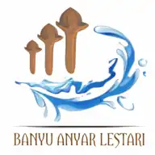

Upload dokumen
Pilih divisi, periode, cut-off dan versi. Unggah Excel asli ke Bank Data privat.

PR. Banyu Anyar LestariAkses privat khusus Owner. Masuk menggunakan akun Supabase Auth yang terverifikasi.
Tidak ada pendaftaran akun baru. Jangan bagikan kata sandi atau kode OTP.
Versi web 6.0 · pembaruan 21 November 2026
Ikuti tiga langkah utama. Buka menu divisi hanya saat ingin meninjau hasil atau menganalisis data.
Upload arsip, pastikan masuk ke Bank Data, lalu pilih laporan yang tersedia.
Prioritas, alasan, dan tindak lanjut dari data pabrik.
Masuk sebagai Owner untuk membaca analisis.
Tiga prioritas teratas, konsekuensi, bukti dan tindakan berikutnya.
Login Owner untuk membaca usulan keputusan privat.
Keputusan masih berstatus USULAN. “Tertahan” berarti belum ada bukti cukup untuk komitmen. Minta analisis lanjutan dapat menyiapkan pertanyaan GPT, tetapi tidak mengirim instruksi tanpa Anda menekan Kirim. Tidak ada pembayaran, posting stok, payroll final, pengiriman atau pembelian yang dilaksanakan oleh panel ini.
Robot menelusuri sumber PPIC melalui akses yang tersedia. Cakupan mengikuti hasil yang dikembalikan setiap pencarian.
Kandidat perlu diverifikasi sebelum memperbarui laporan. Jumlah kandidat menunjukkan hasil pencarian terbatas; status penerimaan file tersedia di Bank Data. Catatan di sini mengikuti aktivitas terbaru.
Ajukan pertanyaan tentang stok, produksi, cukai, DO, bahan baku, SDM, kas, atau minta robot memeriksa pembaruan. Jawaban hanya memakai bukti PPIC yang dapat diverifikasi.
Login Owner untuk mengaktifkan asisten
Perintah dari web tidak langsung memposting stok, melakukan pembayaran, mengesahkan payroll, atau mengubah closing. Sinkron data mengikuti validasi sumber dan jejak audit. Pencarian lintas ChatGPT terbatas pada sumber yang dapat diakses melalui tugas terhubung, bukan seluruh isi akun.
Perbandingan buku dan kesenjangan laporan, tanpa perubahan transaksi.
Belum ada snapshot yang dimuat.
Status analisis akan tampil setelah koneksi privat diperiksa.
Cut-off sumber tercatat dan tanggal laporan ditampilkan terpisah.
Belum diperiksa.
Muat ulang hanya membaca status. Analisis mengikuti pekerjaan terjadwal yang tercatat; arahan divisi tetap berupa usulan.
Lihat status penerimaan otomatis, versi, cut-off, serta pemrosesan laporan pada Bank Data.
Upload menyimpan sumber, bukan otomatis memutakhirkan seluruh laporan. Pastikan data yang akan dicetak sudah tersedia dan memiliki cut-off yang sesuai.
Pilih divisi, periode, cut-off dan versi. Unggah Excel asli ke Bank Data privat.
Pastikan file tercatat dan cek statusnya. SDM bisa diproses dari dua arsip tersimpan.
Pilih laporan bersumber, cek nominal serta tanggal, kemudian Preview PDF.
Menu divisi untuk monitoring, bukan input transaksi manual.
Perhatikan versi, cut-off, dan status WORKING / OPEN RECON. Nilai historis dan estimasi tidak otomatis dianggap final. PPIC ini bukan Web SKT dan tidak mem-posting transaksi operasional.
Pasang BAL PPIC di layar utamaAkses cepat seperti aplikasi Android, tanpa menyimpan laporan privat offline.
Stok barang jadi, pita cukai, hasil batangan, Verpack, dan estimasi kapasitas bahan. Setiap bagian memakai data terakhir yang tersedia sampai tanggal pilihan.
Masuk sebagai Owner untuk melihat Info Harian.
Tentukan divisi, periode, cut-off, dan versi. Unggah file sumber yang benar. Upload menyimpan arsip, bukan posting transaksi atau pembaruan otomatis 13 laporan.
Periksa file di Bank Data. Jika Anda mengunggah SDM Giling dan SDM Verpack, buka menu SDM untuk memprosesnya. Laporan divisi lain harus memiliki snapshot laporan bersumber sebelum bisa dicetak.
Status arsip upload: OPEN RECON / CONFIDENTIAL. File identik tidak diduplikasi dan tidak dipublikasikan melalui GitHub Pages.
File hasil chat yang sudah siap dan tercatat di Control Tower diperiksa melalui sinkronisasi terjadwal. Status setiap file terlihat di sini.
Pemeriksaan terakhir: Belum tercatat
Penerimaan terakhir: Belum tercatat
Arsip yang diterima tetap mengikuti versi dan cut-off sumber. Status pemrosesan laporan ditampilkan terpisah; data yang belum lengkap tetap memerlukan pemeriksaan.
Belum ada hasil sinkron yang ditampilkan.
Temukan file yang Anda unggah. Periksa divisi, periode, tanggal cut-off dan status. File yang tercatat di sini belum tentu sudah menjadi laporan terbaru.
| Divisi | Dokumen | Periode | Versi arsip | Cut-off arsip | Status rekonsiliasi | Penggunaan dalam laporan |
|---|
Belum ada dokumen privat terdaftar atau tidak ada hasil yang cocok. Data internal BAL tidak diterbitkan sebagai file GitHub Pages.
Buka laporan yang ingin diperiksa dan pastikan versi serta cut-off laporan sudah sesuai. Khusus SDM, tersedia tombol untuk memproses kedua arsip Excel tersimpan.
Cari jenis laporan dan periode. Jika statusnya BELUM ADA DATA, tombol cetak tidak bisa digunakan. Preview PDF hanya menampilkan snapshot yang benar-benar tersedia.
Memeriksa laporan tersedia…
Dokumen sumber yang diperlukan:
Periode dipilih: 2026-11
Cut-off: Belum tersedia
Status data: Belum ada snapshot
Belum tersedia data bersumber untuk periode ini. Cetak PDF dinonaktifkan agar tidak menghasilkan laporan kosong.
Angka bersumber ditampilkan sesuai versi, cut-off dan status. WORKING / OPEN RECON bukan closing final.
Dashboard analitik dari snapshot laporan privat. Dokumen Excel yang baru diupload belum otomatis diparsing. Cut-off setiap angka mengikuti sumbernya; grafik bukan data real-time.
Menunggu snapshot DO untuk periode yang dipilih.
Untuk laporan SJ per nomor lengkap (tanggal, customer, area, SKU, HJE, pack, harga, nominal dan pembayaran), Excel DO harus diparsing dan direkonsiliasi. Jangan menyamakan ringkasan DO dengan kartu SJ terverifikasi.
Laporan harian per tanggal 1–30 November. Satuan dan nominal dipisahkan; tanggal setelah cut-off ditandai BELUM ADA DATA, bukan nol. Data yang belum mempunyai saldo fisik tidak diberi saldo rekaan.
| Tanggal | Saldo awal qty | Masuk qty | Keluar qty | Saldo akhir qty | Saldo awal Rp | Masuk Rp | Keluar Rp | Saldo akhir Rp | Status |
|---|
Laporan mengikuti snapshot DO terbaru. Harga jual per pack bersumber dari jurnal, histori, dan konfirmasi Owner. Nominal yang ditampilkan adalah nilai DO kerja, bukan piutang yang telah dibayar. Preview PDF hanya menampilkan nilai DO; kategori HJE tetap dapat dipakai untuk memfilter transaksi.
| Customer | Jumlah SJ | Reguler pack | Sampel pack | Total pack | Nilai DO (Rp) | Pack tanpa harga |
|---|
| SJ | Tanggal | Customer jurnal | Reguler | Sampel | Total pack | Nilai DO (Rp) | Pack tanpa harga |
|---|
| SJ | Tanggal | Customer jurnal | Tujuan | Area | SKU | Merek | HJE | Jenis | Pack | Harga kerja | Nilai DO (Rp) | Basis harga |
|---|
Satu bahan per halaman dengan mutasi dan nilai acuan parsial. Versi, batas tanggal dan status kelengkapan mengikuti sumber aktif. Opname dipisahkan dari pengeluaran rutin; PO belum menjadi stok masuk.
| Tanggal | Awal Qty | Masuk Qty | Keluar rutin Qty | Opname Qty | Akhir Qty | Awal Rp | Masuk Rp | Keluar rutin Rp | Opname Rp | Akhir Rp | Status |
|---|
Pilih periode, tanggal dan SKU untuk melihat saldo buku. Versi dan cut-off mengikuti sumber aktif. Nilai persediaan memakai biaya historis/proksi sesuai sumber, terpisah dari harga jual DO. Saldo negatif dan biaya atau konversi yang belum tersedia tetap ditandai.
| SKU | Merek | Awal pack | Masuk pack | Keluar pack | Saldo pack | Isi pack/karton | Saldo karton ekuivalen | Karton penuh | Sisa pack | Saldo Rp (proksi) | Status |
|---|
| Tanggal | Masuk/Keluar | SKU | Merek | Nomor SJ | Customer | Pack | Karton ekuivalen |
|---|
| Tanggal | Awal pack | Masuk pack | Keluar pack | Akhir pack | Awal karton | Masuk karton | Keluar karton | Akhir karton | Awal Rp | Masuk Rp | Keluar Rp | Akhir Rp | Status |
|---|
Biaya fiskal bruto per keping mengacu pada dokumen CK-1/SPPR. Saldo buku dan nilai cukainya mengikuti kartu pita pada tanggal terpilih.
| HJE / isi | SKU pada dokumen | Cukai Rp/keping | PPN HT Rp/keping | Pajak rokok Rp/keping | Total bruto Rp/keping |
|---|
| HJE / isi | Keping | Rim | Pack/karton | Biaya Rp/rim | Biaya Rp/karton | Total bruto pesanan Rp |
|---|
| Komponen | Dokumen | Perhitungan | Selisih |
|---|
| Tahap | Status | Keterangan |
|---|
| HJE / Jenis | Saldo keping | Pack/karton | Karton ekuivalen | Karton penuh | Sisa pack | Status |
|---|
| Tanggal | Saldo akhir keping | Pack/karton | Karton ekuivalen | Karton penuh | Sisa pack | Status |
|---|
| HJE | Saldo keping | Tarif cukai/keping | Nilai saldo cukai Rp | Rata-rata pemakaian/hari aktif | Estimasi sisa hari produksi | Status |
|---|
| Tanggal | Awal keping | Masuk keping | Pemakaian keping | Akhir keping | Awal cukai Rp | Masuk cukai Rp | Pemakaian cukai Rp | Akhir cukai Rp | Status |
|---|
Nominal saldo dan mutasi = tarif cukai × keping; belum termasuk PPN HT dan pajak rokok. Biaya dokumen di atas tidak digunakan untuk menilai ulang seluruh saldo. Penerimaan fisik mengikuti bukti yang tersedia. Tarif Refill yang belum terverifikasi ditampilkan kosong.
Laporan privat hasil kerja per pekerja, merek, tanggal, upah dan status sumber. Filter fleksibel tanggal-ke-tanggal; periode payroll standar Jumat–Kamis. Absensi tidak boleh disimpulkan dari hasil nol tanpa bukti kehadiran.
Pilih laporan Giling, Verpack, atau Gabungan. Semua menggunakan rentang tanggal di atas; merek dan nama dikembalikan ke Semua agar tidak ada pekerja terlewat.
Hasil giling
—Upah: —
Hasil kemas
—Upah: —
Hasil dua divisi; satuan tetap terpisah
—Upah gabungan: —
Pilih divisi, rentang maksimal 7 hari, dan nama / ID pada filter di atas. Perhitungan upah mencakup semua merek dari pekerja terpilih.
| Divisi | Merek | Hasil Giling (batang) | Hasil Verpack (pack) | Upah tercatat (Rp) | Pekerja ada hasil | Status |
|---|
Total batang dan pack tidak digabung sebagai satu kuantitas. Nominal adalah upah dari file sumber, belum termasuk bonus dan potongan; absensi tidak disimpulkan dari hasil nol.
| Divisi | ID | Nama | Jumlah hari ada hasil | Hasil kerja | Satuan | Upah tercatat Rp | Status |
|---|
| Tanggal | Divisi | ID | Nama | Merek | Hasil | Satuan | Nominal Rp | Status sumber | Validasi |
|---|
Sumber Excel belum otomatis menjadi laporan. Gunakan tombol Proses untuk membaca dua arsip privat.
Total upah merupakan nominal yang tercatat dalam file sumber, bukan slip gaji final. Bonus, lembur, potongan dan kehadiran resmi memerlukan rekonsiliasi tersendiri.
Status di bawah mengikuti sumber dan laporan yang terbaca pada sesi Owner. Periksa versi, cut-off, dan kelengkapan sebelum menggunakan angka.
| Divisi | Status | Aksi |
|---|